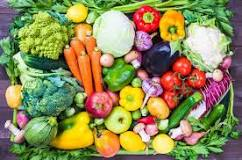

Pourquoi vegan?
- Un mode de vie vegan empêche une quantité énorme d'abattages et de souffrances animales.
- Il offre un moyen puissant de réduire notre empreinte environnementale, en particulier en ce qui concerne le changement climatique.
- Et un régime végétalien bien planifié peut alimenter les plus hauts niveaux de forme physique, tout en réduisant notre risque de diverses maladies chroniques.
Vegetarian Paradise, c'est un bon choix!
- Notre magasin peut offrir une variété de choix pour ceux qui aiment le style d'alimentation à base de plantes.
- Tous les aliments sont soigneusement préparés pour assurer la fraîcheur, les saveurs et les nutriments
- La plupart des ingrédients sont d'origine locale, certains sont importés des États-Unis, de l'UE et du Mexique avec certificat
Heurs d'Ouverture
| Lundi | 11.00 - 20.00 |
| Mardi | 11.00 - 20.00 |
| Mercredi | 11.00 - 20.00 |
| Jeudi | 11.00 - 20.00 |
| Vendredi | 11.00 - 20.00 |
| Samedi | 11.00 - 22.00 |
| Dimanche | 11.00 - 22.00 |
Veuillez cliquer ici pour plus d'information de soldes d'avant Noël.